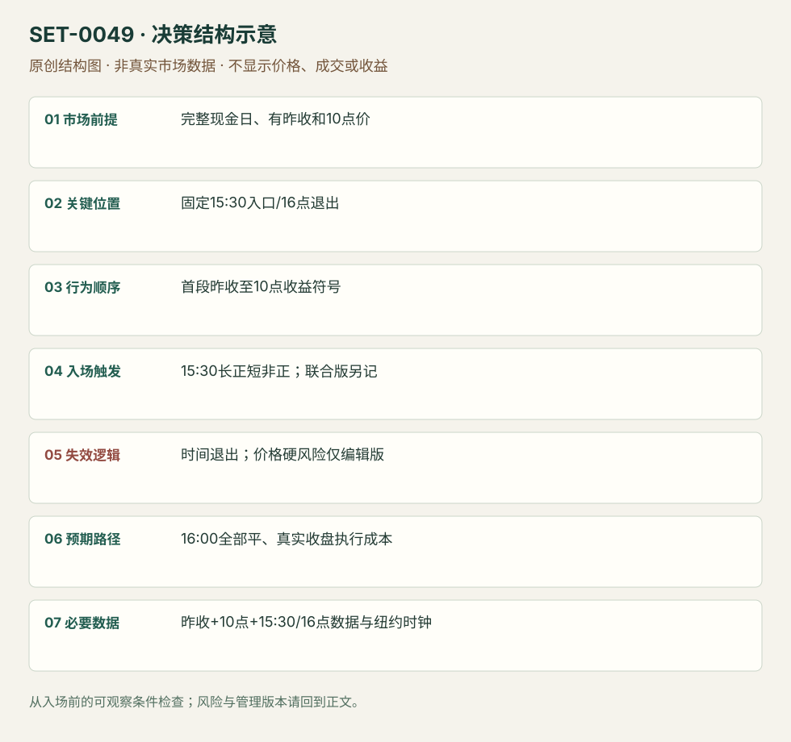

首段收益方向驱动的最后半小时
First-to-last Half-hour Momentum · SET-0049 · reviewed · v1.0.0
盈利证据：author_backtest_not_reproduced。审查范围与来源版本见第13节；未知字段保留缺失原因。
1. 名称与快速概览
15:30才按今天首段收益的方向持仓最后30分钟，并在16:00结束。论文“首半小时收益”含昨收至今日10:00的隔夜部分，不是09:30开盘到10:00的纯现金收益。
记录口径：PA non_primary；必要数据 intraday_prices、previous_close、session_clock。名称性质：来源术语或研究术语。reviewed 只表示本条规则与证据记录审查通过，盈利状态为 author_backtest_not_reproduced。
2. 本质与行为假说
论文发现首段与最后半小时收益有正向统计关系，并提出交易者行为解释。解释尚非因果证据；个体一日方向预测可能完全失败。
3. 适用市场与环境
2014-10作者预印本，SPY 1993-02-01至2013-12-31，另扩展10只ETF。保留该版本样本与日期；不把另一SSRN版本或今天环境悄悄替换。
来源实用市场：SPY ETF、QQQ/XLF/IWM/DIA/EEM/FXI/EFA/VWO/IYR/TLT（论文扩展）。
Session：NYSE现金参考09:30–16:00 America/New_York；首段包含前日16:00至今日10:00，但持仓只15:30–16:00。半日另立版本，不将13:00日默认为16:00。
跨市场：本版不主张已经验证的跨市场迁移；更换市场必须重定数据来源、流动性与session。
4. 出现前的观察清单
锁定前日16:00价、今日10:00价、15:30入口与16:00退出的纽约时钟、复权与半日处理。原论文日历变量历史发布时间不能拿今天日程去替。
5. 形成过程与状态转换
昨收参考 →10:00得到r1 → 等至15:30 →r1正则长、非正则短 →16:00平。联合版另看15:00–15:30 r12，异号不做。
6. Entry trigger 与执行方式
主符号策略r1=C(10:00)/C(昨16:00)−1，15:30按其正负入场；原公式零值归short。联合r1/r12同号版本按论文边界定义，不能仅挑交易日提高表面胜率。
7. Invalidation 与止损逻辑
原符号模型以固定30分钟暴露和16:00退出界定风险，没有统一价格硬止损。实务添加最大损失/硬止损是编辑新版本，必须重新检验，不能继承论文回报。拒绝无法承受该时间风险的样本。
8. Exit、target 与 trade management
16:00退出；须明确收盘集合成交、最后可成交报价与论文价格标记的差别。提前按图形获利/止损属于另一个退出版本。
9. 常见 variations
只用r1、只用r12、同号联合、回归预测下均值方差配置是同一预测关系的不同实现，不计四条。原联合版无交易日不纳入命中率分母，这个口径需保存。
10. 失败方式与不交易条件
误算首段为开盘收益；零值处理不一致；收盘价不可按理论标价成交；短融/交易费用；极端尾盘消息翻转；使用历史全年波动排名做实时选股过滤。
11. 与相近 setups 的区别
12. 图表与案例解读
视觉缺口：已读论文规则、表5和成本段；未取得可核对的单日价格入场案例。绩效汇总和回归表不计真实交易图覆盖，后续可用原始数据画因果模拟图并明确标模拟。
本地原创示意（VIS-000106，非真实市场数据）：

小屏阅读可打开原尺寸示意图并缩放。

此图用于对照识别顺序与风险定义；不计入真实案例覆盖率。
视觉材料元数据与查看范围
- VIS-000106 · synthetic_structure_diagram / illustration_only / generated_not_market_evidence
品种：未知/不适用；日期：未知/不适用；周期：未知/不适用；时区：未知/不适用
无真实品种、日期或价格：这是结构示意
13. 证据、分歧与未知项
单一富信息论文家族，规则与历史作者测试可还原，本研究未复现。论文用千股SPY和历史价格/佣金估成本，部分净收益讨论针对回归配置而非纯符号模型；不套成当下通用成本。
- [EVD-000097] Lei Gao; Yufeng Han; Sophia Zhengzi Li; Guofu Zhou，《Intraday Momentum: The First Half-Hour Return Predicts the Last Half-Hour Return (October 2014 preprint)》，SRC-0081；定位：PDF页序6定义p0 /11–12符号策略 /16–17成本讨论 /31 Table5。支持：首段收益从昨16:00收盘到今10:00，15:30按符号长/短、16:00平；联合15:00–15:30同号版另记，研究与成本讨论不是当前收益保证。
审查例外：此条只有一份富信息原始资料，足以还原本条规则；独立佐证有限，未用背景页冒充第二份核验。后续优先寻找独立规则/失败案例。
- [EVD-000106] 编辑操作化，未测试：实务可添加事前最大价格损失限制/硬止损，但这是新风险版，需要重新检验。 原文边界：原符号模型只固定15:30–16:00时间暴露，没有统一价格硬止损。
14. 可用于复盘的检查表
- ☐ 下单前的前提可核对：完整现金日、有昨收和10点价
- ☐ 事前标记位置：固定15:30入口/16点退出
- ☐ 行为按顺序出现：首段昨收至10点收益符号
- ☐ 实际触发符合选定版本：15:30长正短非正；联合版另记
- ☐ 事先写明本次否定条件：时间退出；价格硬风险仅编辑版
- ☐ 目标/路径只用当时已知信息：16:00全部平、真实收盘执行成本
- ☐ 数据满足 昨收+10点+15:30/16点数据与纽约时钟；记录时间、点差、滑点、队列和未成交
- ☐ 记录截止平仓及规则偏离；正常亏损不事后改成“未成立”
15. 后续验证问题
2014后样本和收盘成交机制有何变化？原首段含overnight贡献多少？纯符号与联合版成本后、无交易日分母差异？
双向相关导航
- SET-0048 按同一时刻历史波动定义的日内噪声带动量 0049 固定15:30按早期收益符号定方向，本条可在多个半小时时点触发噪声带突破。
- SET-0027 市场确认后的个股相对强弱交易 0027 比较股票与指数相对响应，本条预测同一资产的不同时段。
本条来源：SRC-0081